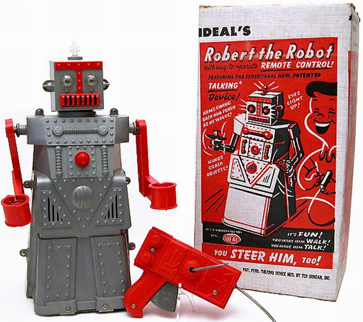

People have been building mechanical figures as far back as ancient Greek times. In 1206, a Muslim engineer and inventor called Al-Jazari built what is believed to be the first programmable humanoid robots. They were musicians that played instruments while floating in a boat on a lake to entertain royal guests. Inventors continued to experiment with the idea of an automated human, including Leonardo da Vinci who made detailed drawings of a mechanical knight. Like a lot of his mechanical drawings, scientists and historians don’t know if he ever actually constructed this knight, but one has been built from his drawings in more modern times, and this robot is able to sit up, move its arms, head and jaw.
The most complex mechanical creations were designed and made by a Japanese craftsman named Hisashige Tanaka who lived from 1799 to 1881. Among these toys were figures that could serve tea, shoot arrows and write.
Japanese factories had begun making simple tin toys in the late 19th century. Japan had observed the large profits earned by German manufacturers and hoped to obtain a share of the market. Japan produced a cheaper, more simple version of the German toys and by the end of WWI, Japan enjoyed the larger share of the business, leaving Germany far behind.
As a means to rebuild the Japanese economy post-WWII, many products that were previously made in the U.S. were sent overseas to be made in Japan. U.S. toy importers then bought the Japanese-made toys to sell to American customers. By the mid-1950’s, Japan had become the world’s primary toy manufacturer.
The word “robot” was first used in reference to artificial people by the Czech author Karel Capek in 1921. It originated from the Czech word “robota”, meaning “work” or “labor”.
The first tin toy robot to be made is believed to be Lilliput from Japan. The square, yellow robot was always thought to date from the 1930’s, but experts now believe he was actually first made in post-War occupied Japan around the mid-1940’s. The next robot that was released was Atomic Robot Man in the late 1940’s. He was given out as a promotional gift at the 1950 New York Sci-Fi Convention.
In 1940 Isaac Asimov released a series of short stories for “Super Science Stories Magazine” featuring a robot that develops affection for a child whose duty is was to protect. Asimov was responsible for developing the Three Laws of Robotics. These stated that (1.) A robot may not injure a human being, or through inaction, allow a human being to come to harm. (2.) A robot must obey the orders given it by human beings except where such orders would conflict with the First Law. (3.) A robot must protect its own existence as long as such protection does not conflict with the First or Second Law.
The first tin toy robot may have been made in Japan, but in fact, American companies manufactured the majority of the early toy robots. There was the Ideal Toy Corporation’s Robert the Robot, released in 1954. He was able to walk and talk, while his arms swung and his eyes lit up. These motions were initiated by a remote control that connected to the robot’s back with a wire. The release of Robert the Robot was followed by Marvelous Mike, The Robot Dog, Z-Man, Marx Electric Robot and Big Max. To compete with the American market the Japanese released a new and improved battery-operated robot in 1955 that didn’t require any wires.
We have seen robots evolve from a courtly amusement, to the hottest toys ever, to advanced technologies like artificial intelligence. But at Retroplanet.com our favorite incarnation of the robot is that of a retro toy. Robots can revive childhood memories that send you back in time at warp speed. So be sure to take look at the reproduction robots, posters, framed art and even drink coasters that we carry. They’re “out of this world”!
In examining the history of famous robots, you’d be forgiven for overlooking a 1950s children’s toy named Robert. Robert the Robot, who was a product of the once-mighty Ideal Toy Company, didn’t do much, at least compared to the standards set by science fiction at the time. Unlike the helpful humanoids of Isaac Asimov’s I, Robot, Robert was just a 14-inch-tall hunk of plastic that could utter a few phrases, wheel around with a tethered remote control, and grip objects in his mechanical arms. Still, Robert deserves credit for being the first plastic toy robot made in the United States, and the first toy robot to become an American sensation. He was the subject of children’s songs, enjoyed a Hollywood film cameo, and was quickly imitated by rival toy makers. He also preceded the industrial robotics boom by several years, capturing people’s imagination long before we truly understood what robots could do.

TA-TA, TIN
Robert was not the first toy robot of the post-WWII era. That honor, according to Collectors Weekly, goes to Lilliput, a Japanese robot made of tin. After the war, tin lithograph toys were a popular export from American-occupied Japan, and Lilliput spawned plenty of successors.
But Robert was an American original, who according to Robotapedia was originally supposed to be a tie-in to the 1954 robot film Tobor the Great. Although Robert never appeared in the film, he received plenty of promotion on his own, debuting in the 1954 Sears Christmas catalog with an asking price of just under $6, or about $54 in 2016 dollars.
Instead of tin, Ideal used plastic injection molding–a process that itself rose to prominence during the war. Plastic was cheaper than tin or cast iron, and it allowed American companies like Ideal to produce their own toys instead of importing and reselling them.
“Robert was an answer to this massive amount of tin toys that were coming from Japan,” says Justin Pinchot, a Los Angeles-based collector of vintage toy robots and ray guns. “It was really the beginning of the plastic era.”
That’s not to say Robert was some cheap knockoff. Cranking the handle on Robert’s back caused him to speak (“I am Robert Robot, mechanical man. Drive me and steer me, wherever you can”), while a battery inside Robert’s head allowed his eyes to light up. The cable-driven remote control was novel as well, using a hand crank for movement and a trigger for rotation.
Robert also had a unique aesthetic. As Pinchot points out, no one else was doing large robots with “skirted” lower sections at the time, and the look was quickly duplicated even in Japanese robots such as the “Gang of Five,” who remain beloved by toy-robot collectors.
“A lot of these innovations were started here and picked up by Japan, so I think Robert was one of those. I’m sure he inspired a lot of tin stuff,” Pinchot says.
THE MECHANICAL MAN
How popular was Robert the Robot? While verifiable sales figures are illusive, a September 1955 story in the Portsmouth Times of Portsmouth, Ohio, claimed that Robert was Ideal’s biggest hit yet. Demand was so strong that Ideal started licensing T-shirts, flashlights, and other Robert-related merchandise, and when Shillito’s Toyland opened in downtown Cincinnati in 1955, a 9-foot-tall Robert greeted customers on the sidewalk, according to the Cincinnati Enquirer.
Robert never became an enduring pop culture icon despite his Hollywood origins, but he did enjoy some attention from the entertainment industry. The children’s music label Cricket Records produced a pair of songs about him, and he made a short appearance in the Douglas Sirk melodrama There’s Always Tomorrow, starring Barbara Stanwyck and Fred MacMurray.
Given all the adoration, it’s hard to say exactly why Robert the Robot gets so easily lost in robot history, though it might just be a case of planned obsolescence. While Ideal continued to produce Robert into the 1960s, the company also moved onto new ideas
such as Mr.Machine, a popular robot who could be fully dissembled and reassembled. Meanwhile, competitors created their own plastic robots, such as Marx’s Robot and Son and Mr. Mercury. In an era before the perpetual cycle of media and merchandising tie-ins, Robert wasn’t built to last.
But along with his toy robot peers, Robert may have served a higher purpose, helping to spark our fascination with new technology. As Pinchot points out, the 1950s robot obsession wasn’t only prompted by sci-fi, but by actual automation in products like washing machines, washer-dryers, electric ranges, and vehicle transmissions. Just as women were joining the work force, new technologies were automating more tasks. Robots like Robert, he says, tapped into that feeling.
“If you gave a kid a toy to play with, it intimated doing things for him or her automatically,” Pinchot says. “That was where we were going, that’s where the country was going, that’s where the world was going, toward more automation and less work.”